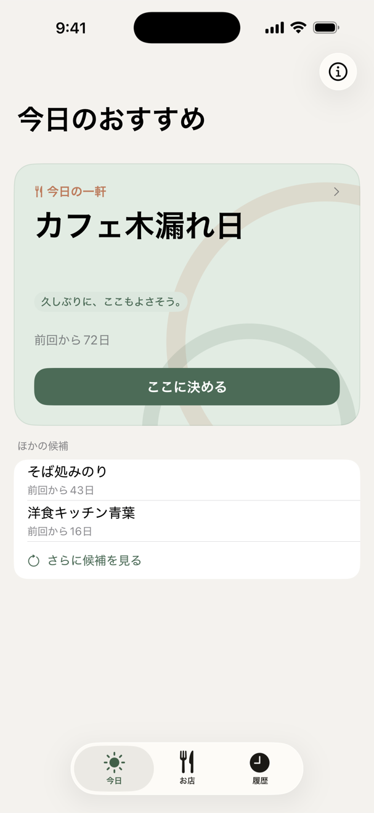
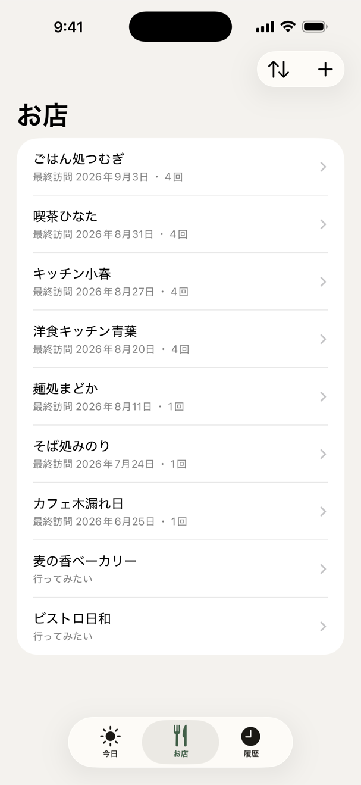
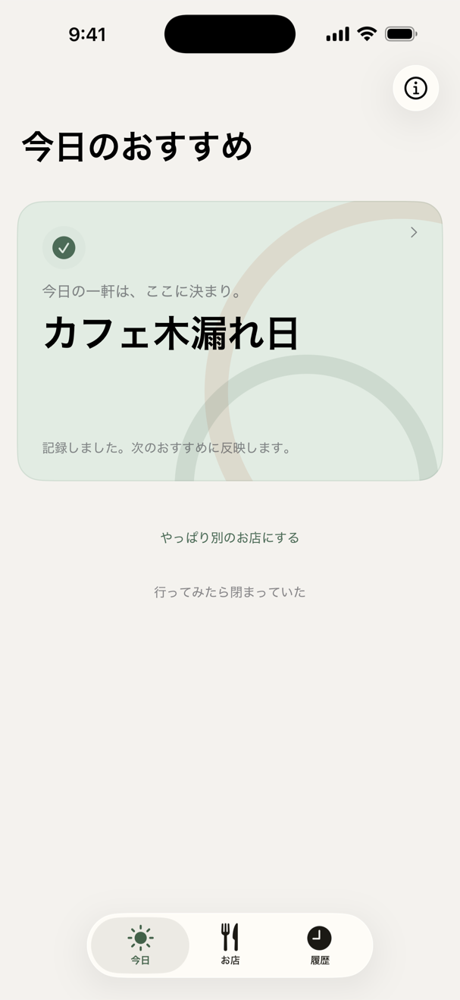
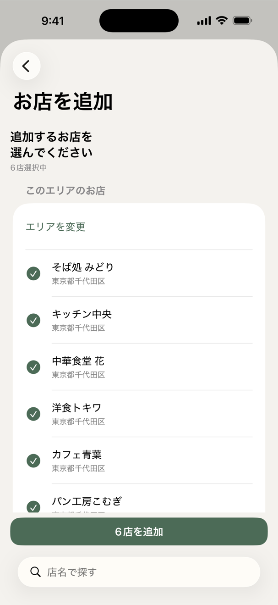
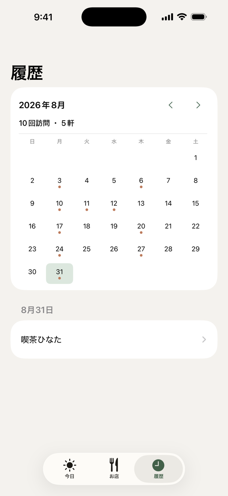
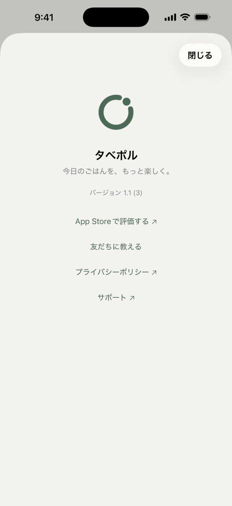

今日どこで食べる？
新しいお店を探したいわけじゃない。
でも、いつものお店の中から今日はどこに行くか決まらない。
タベポルは、そんな毎日の店選びを少しだけ楽にするアプリです。
いつものお店から、
今日の一軒。
よく行くお店を登録すると、前に行ってからの間隔や、いまの時間帯をもとに「今日の一軒」を提案します。
位置情報を許可していれば、現在地からの近さも考慮します。
提案には、そのお店をすすめる理由がひとこと添えられます。
- 「そろそろ、また行きたくなる頃。」
- 「久しぶりに、ここもよさそう。」
- 「まだ記憶に新しいお店。」


使い方はシンプル。
いつものお店を登録
よく行くお店をまとめて追加します。今日のおすすめを見る
登録したお店から「今日の一軒」が表示されます。「ここに決める」
タップするだけで、その日のお店が決まります。
「ここに決める」で訪問も記録され、次のおすすめに反映されます。
食後にもう一度アプリを開いて訪問記録を付ける必要はありません。
App Storeで見る 無料・アカウント不要・広告なし
いつものお店を、
まとめて登録。
駅名や地名でエリアを探し、表示された一覧から登録したいお店をまとめて追加できます。
行ったことのあるお店だけでなく、「行ってみたいお店」も候補に加えられます。

行ったお店を、
カレンダーで振り返る。
いつ、どのお店に行ったかを月ごとに振り返れます。


新しいお店を探すより、
好きなお店をもっと楽しむ。
タベポルは、グルメ検索や口コミを見るためのアプリではありません。
いつものお店の中から、今日行く一軒を決めるためのアプリです。
ランチでも、夜の外食でも、行きつけの飲食店の中から今日の店選びができます。
タベポルについて
タベポルはどんなアプリですか？
タベポルは、普段利用しているお店の中から「今日の一軒」を提案するiPhoneアプリです。新しい飲食店を探すことよりも、いつものお店から今日行く場所を決めることに特化しています。
どんな人に向いていますか？
外食することが多く、「行くお店はいくつかあるけれど、今日はどこにしよう」と迷う人に向いています。
グルメ検索アプリとは何が違いますか？
タベポルは、口コミやランキングから新しいお店を探すことを中心にしたアプリではありません。自分が登録したお店をもとに、今日行く一軒を決めるためのアプリです。
行ったことのないお店も登録できますか？
はい。「行ってみたいお店」として候補に追加できます。まだ訪問していないお店も、今日の候補に入ります。
位置情報を使わなくても利用できますか？
はい。位置情報は任意です。位置情報を許可すると、登録したお店の中から現在地に近いお店を提案したり、近くのお店を追加したりできます。
アカウント登録は必要ですか？
不要です。登録したお店と訪問履歴は端末に保存されます。
- 名称
- タベポル
- 種類
- iPhoneアプリ
- 必要環境
- iOS 26.0以上（iPhone専用）
- 用途
- いつものお店から今日行く一軒を決める
- 価格
- 無料
- カテゴリー
- フード／ドリンク
今日のお店選びを、少し楽に。
iPhone専用・iOS 26.0以上・無料。アカウント登録は必要ありません。